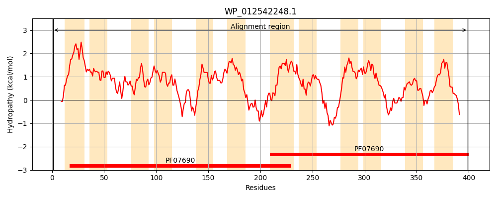
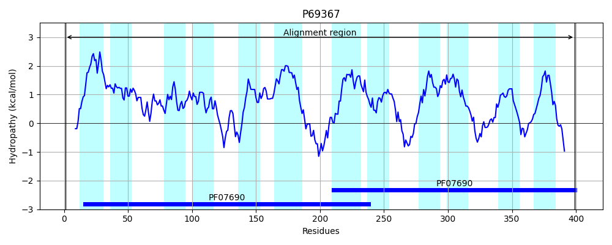
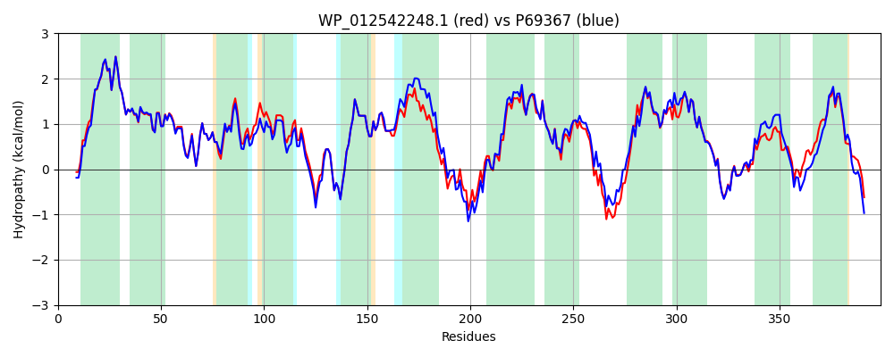

Hit Accession: P69367
Hit TCID: 2.A.1.2.21
Hit Description: gnl|BL_ORD_ID|11260 gnl|TC-DB|P69367|2.A.1.2.21 Multidrug resistance protein mdtH - Escherichia coli.
Mach Len: 399
e:0.000000
Query TMS Count : 12
Hit TMS Count: 12
TMS-Overlap Score: 10.950000
Predicted Substrates:CHEBI:4796;enoxacin, CHEBI:7629;norfloxacin
BLAST Alignment:
Score: 1813 , Bit scores: 702 bits, E-value: 0.0e+00, Alignment length: 399, Percentage identity: 85
Query: 1 MSRVSQARSLGKYFLLVDNMLVVLGFFVVFPLISIRFVDQMGWAALMVGIALGLRQLVQQGLGIFGGAIADRFGAKPMIVTGMLMRAGGFAAMAVAHEPWVLWLSCILSGLGGTLFDPPRAALVVKLVRPHQRGRFFSLLMMQDSAGAVIGALLGSWLLQYDFRLVCSAGAALFIACAAFNAWYLPAWKLSTVKTPVREGLGRVLRDKRFVTYVLTLTGYYMLAVQVMLMLPIMVNDIAGSPAAVKWMYAIEATISLTLLYPIARWSEKRYRLEHRLMAGLLVMTLAMLPIGMTSSLQQLFTLICLFYIGSIIAEPARETLGASLADARARGSYMGFSRLGLAFGGALGYAGGGWLFDAGKAVGQPELPWLMLGAIGFITFLALWWQFSPKRSASGMLE 399
MSRVSQAR+LGKYFLL+DNMLVVLGFFVVFPLISIRFVDQMGWAA+MVGIALGLRQ +QQGLGIFGGAIADRFGAKPMIVTGMLMRA GFA M +AHEPW+LW SC+LSGLGGTLFDPPR+ALVVKL+RP QRGRFFSLLMMQDSAGAVIGALLGSWLLQYDFRLVC+ GA LF+ CAAFNAW LPAWKLSTV+TPVREG+ RV+RDKRFVTYVLTL GYYMLAVQVMLMLPIMVND+AG+P+AVKWMYAIEA +SLTLLYPIARWSEK +RLEHRLMAGLL+M+L+M+P+GM S LQQLFTLICLFYIGSIIAEPARETL ASLADARARGSYMGFSRLGLA GGA+GY GGGWLFD GK+ QPELPW+MLG IG TFLAL WQFS KR+A +LE
Sbjct: 1 MSRVSQARNLGKYFLLIDNMLVVLGFFVVFPLISIRFVDQMGWAAVMVGIALGLRQFIQQGLGIFGGAIADRFGAKPMIVTGMLMRAAGFATMGIAHEPWLLWFSCLLSGLGGTLFDPPRSALVVKLIRPQQRGRFFSLLMMQDSAGAVIGALLGSWLLQYDFRLVCATGAVLFVLCAAFNAWLLPAWKLSTVRTPVREGMTRVMRDKRFVTYVLTLAGYYMLAVQVMLMLPIMVNDVAGAPSAVKWMYAIEACLSLTLLYPIARWSEKHFRLEHRLMAGLLIMSLSMMPVGMVSGLQQLFTLICLFYIGSIIAEPARETLSASLADARARGSYMGFSRLGLAIGGAIGYIGGGWLFDLGKSAHQPELPWMMLGIIGIFTFLALGWQFSQKRAARRLLE 399 | Protein Hydropathy Plots: |
|---|
|  |  |
Pairwise Alignment-Hydropathy Plot:
|
|---|
|  |